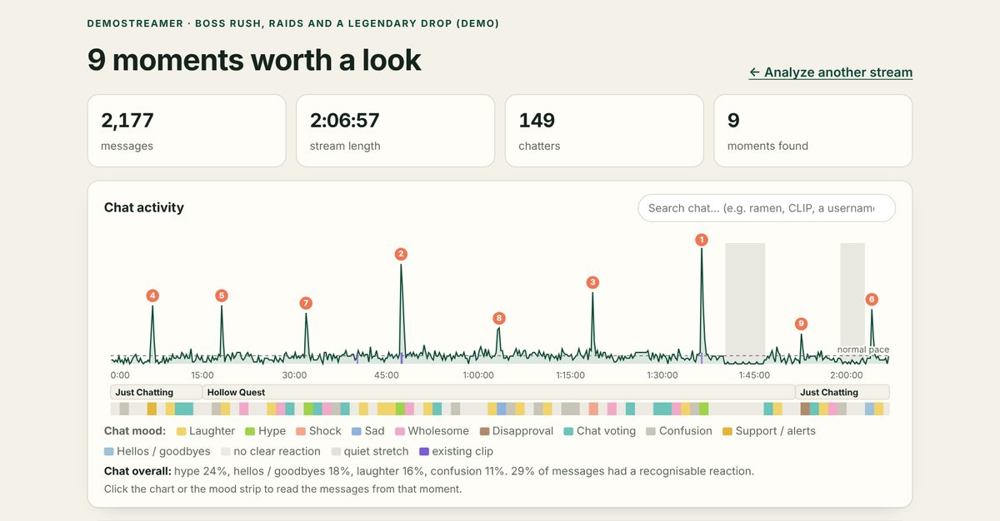
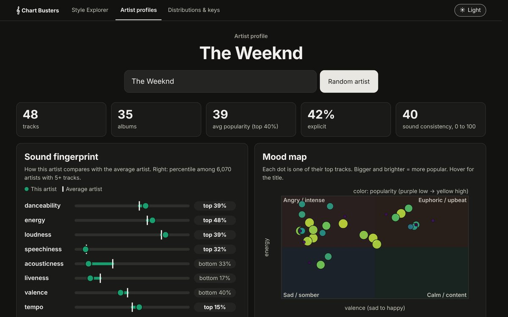

Viewtopsy – Multimodal Livestream Analysis
Finds the moments a Twitch or YouTube chat reacted to, classifies the reaction, explains the likely cause from video frames, and suggests clip-ready ranges.
View on GitHubMS in Data Science, University of Washington
I turn data into models that make smarter decisions, and I love every step of it.
I’m an MS student in Data Science at the University of Washington. Before that, I studied Data Science and Cognitive Science at the University of Michigan.
I love exploring different industries to find where machine learning delivers real benefit, whether that’s optimizing resources, cutting waste or making everyday work more efficient. This past summer I was a deep learning intern at Focal Systems. At Michigan I did computer vision research, worked as a machine learning student researcher with Walbridge, and studied solar-flare forecasting with spatial and temporal deep learning models.
I’m especially interested in representation learning, recommender systems and multimodal models. If you’re working on something in that space, I’d love to hear about it.
Deep Learning Intern
Computer Vision Research
Machine Learning Student Researcher

Finds the moments a Twitch or YouTube chat reacted to, classifies the reaction, explains the likely cause from video frames, and suggests clip-ready ranges.
View on GitHub
Undergraduate research (U-M Statistics) forecasting M-class-or-larger flares from multi-channel solar images (ResNet-18, DINOv3, Surya) and magnetic-field time series (LSTM).
View poster
Popularity, ALS and SASRec recommenders compared in paired A/B tests on 200k grocery shoppers. ALS lifted hits by 31% over the popularity baseline.
View on GitHub
Explore music by mood, energy, danceability and tempo instead of genre. Tune a song’s attributes, get recommendations, and build a spider chart of your taste. I built the artist profiles page.
MS in Data Science
BS in Data Science, BS in Cognitive Science